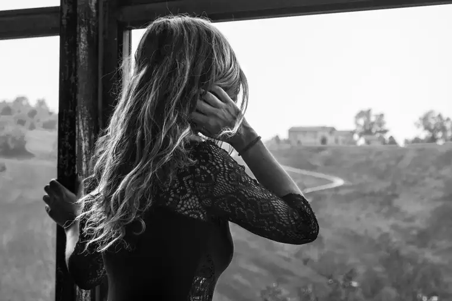

Everything was ready the morning of Sept. 27 for the 2023 40 Days for Life Fall Campaign opening. The flatbed with signs and microphones was parked across the street, the speakers were gathered, the prayer folks were in place.
But just a few minutes before 10 a.m., something happened to prevent a prompt beginning.
First, a man from a landscape company began zooming around on a riding lawn mower in front of the office-building-turned-abortuary. As soon as he got going, a garbage truck rolled up and began grabbing and dumping bins in the apartment-building parking lot to the east. It wasn’t long before the lawn guy jumped out of the mower to start up his electric weed whacker, working the edges of the lawn just inches from the sidewalk where we stood, the loud, frantic buzzing increasing with each blade of grass trimmed. Across the street, another work truck had thread a large hose into a hole beneath the surface of the road and was creating a racket just feet from the 40 Days for Life truck and crew.

This sudden cacophony of sounds couldn’t have been timed any more perfectly to frustrate our plans. It was almost as if the Red River Women’s Clinic had asked the workers to arrive right at 10 a.m.
Clearly, the opening was not going to happen at the top of the hour as promised. As one of the team members talked to the workers with the hose, loud music began blaring behind me. It was coming from the phone of an abortion escort who paced back and forth just inches from us, adding to the clanging concert now pervading the atmosphere.
“They keep on telling me I’m cursed. I’m paranoid and I don’t want to make it any worse,” went the words of the rap song. “We’re all going to die but first things first. Ima take the world with me when they put me in the dirt.”
“What a zoo!” I whispered to my friend Nick. Undoubtedly, Old Scratch was up to his tricks. At least some of the disruption seemed purposefully placed. But it couldn’t go on forever. I looked up at the sun, engulfed by clouds all around, yet shining through the center like the Eucharist in a monstrance.
Soon, the loud sounds stopped, the men across the street paused their work, the lawn guy lumbered away, and the garbage truck moved on.
Peace prevailing now, the second 40 Days for Life launch at this location commenced. It included a touching opening prayer, heartening encouragement from several speakers, and a moving talk by a young woman who shared the painful story of her abortion at age 17.
The death of her child had happened without her mother, a pro-life Christian, knowing. The Red River Women’s Clinic employees knew the law, but also a workaround. They promised the high-schooler they’d find a way; her mom would never know. Straight from the courtroom one morning, after successfully jumping that legal hoop, they escorted her into a room to take care of the “mistake,” ending her child’s life.
When her mom found out, instead of responding angrily, she grieved, according to the woman, both the loss of her grandchild and her parental rights. Later, when welcoming her two daughters, she felt unworthy, and it took a while for her to find healing, she shared, but it happened in time.
In closing, the Rev. Paul Levtin remarked, “When the darkness is exposed, that’s when healing begins.” I nodded, feeling fortified to continue bringing attention to this devastating reality in our community and world; one that has claimed too many of our children and grandchildren.
As a tribute to the babies who’ve perished there, Pastor Paul played a hauntingly beautiful rendition of “Amazing Grace” on his bagpipes; one he’d played a few years earlier at the funeral of his miscarried child. It pierced our hearts like hope, and for a few wonderful moments, we glimpsed the win of heaven.
Even if the discordant chorus from earlier had not ceased, it wouldn’t have mattered. God’s ears cannot be drowned out, for nothing escapes his hearing; not the pitter-patter of tiny hearts, not even the silent cries of the women who’ve been led astray by a lost culture. And certainly, not the pleas you and I pray every day for an end to this senseless scourge.

[Note: I write about my experiences praying for the end to abortion at the sidewalk abutting the Red River Valley’s lone abortion facility for New Earth magazine — the official news publication of the Fargo Diocese. I hope you find “Sidewalk Stories” helpful in understanding the truth about abortion and how it plays out tragically in our corner of the world. The preceding ran in New Earth’s November 2023 issue.]